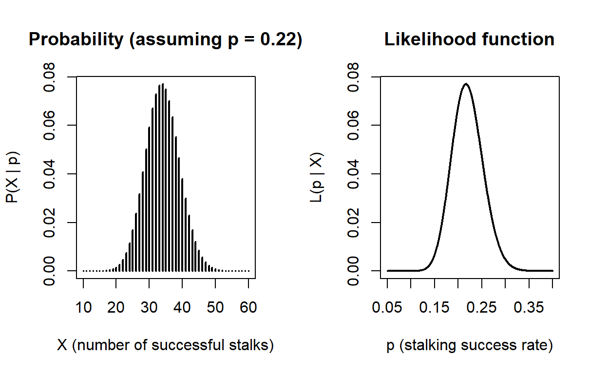
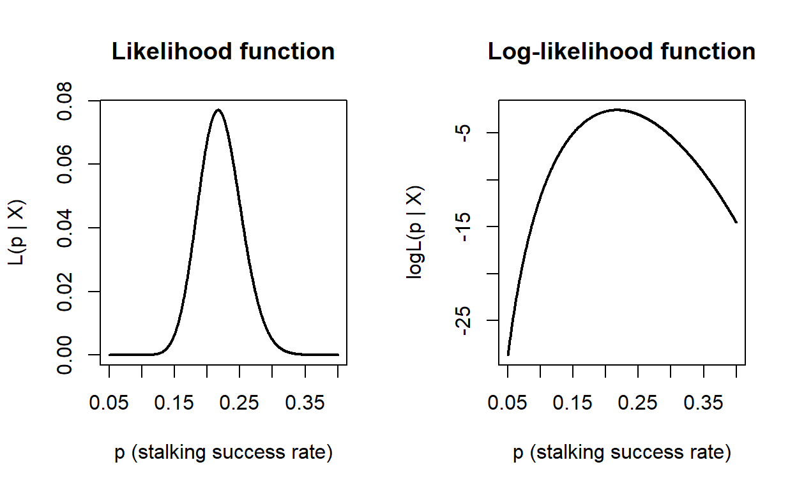
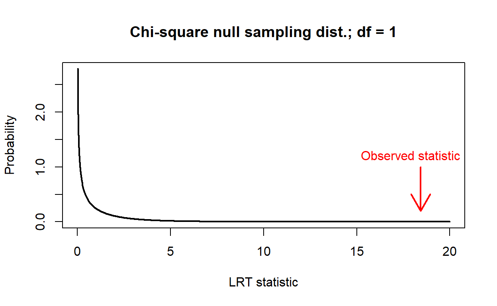
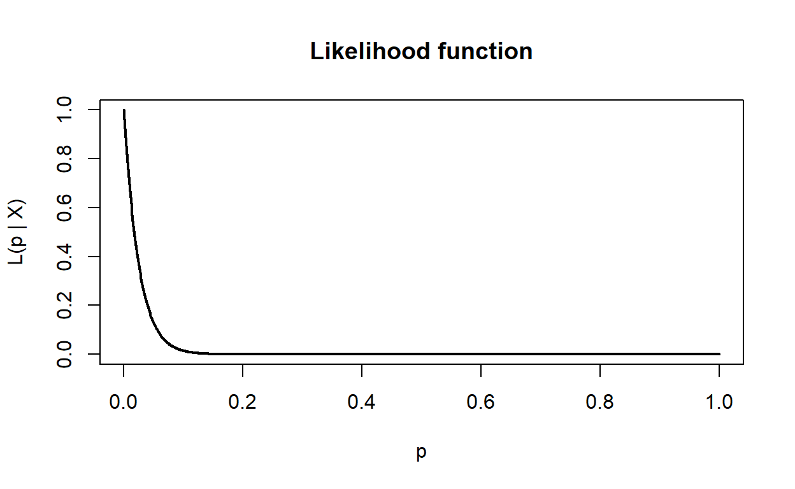
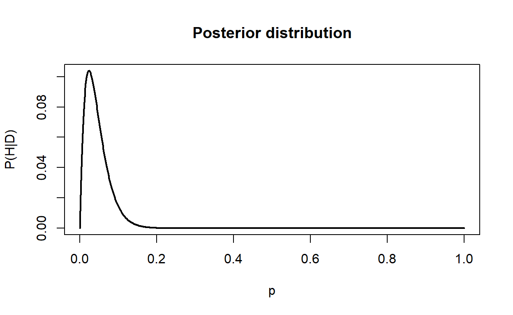
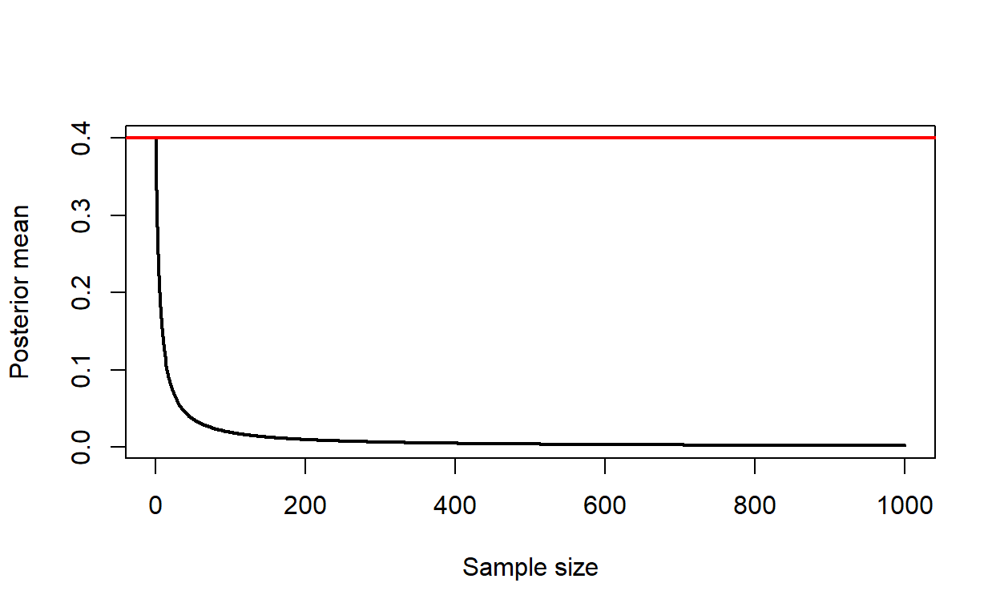

Week 14: Probability, likelihood, & Bayesian methods
ANTH 674: Research Design and Analysis in Anthropology
Professor Andrew Du
Introduction
This week, we covered what can be considered the fundamentals of statistics (i.e., probability theory) and model-building (i.e., probability theory, likelihood, and the Bayesian paradigm).
Probability theory lies at the foundation of statistical inference, which includes computing P-values and confidence intervals. One can also create mathematical models using probability theory itself.
Likelihood is a principled frequentist framework for parameter estimation, hypothesis testing, and model selection. In fact, many, if not all, frequentist tests can be derived using likelihood (e.g., t-tests, ordinary least squares regression), so likelihood represents a unified framework for all frequentist models.
Bayesian methods combine prior information with a likelihood function to get a posterior probability of some quantity of interest, given the data. One advantage (or disadvantage depending on whom you ask) of Bayesian methods is how probability is interpreted. This interpretation is known as subjective probability, and it quantifies one’s uncertainty or degree of belief in some event. This interpretation is different than the frequentist one, which interprets probabilities as the long-run relative frequency of some event happening.

I view these three topics as hierarchical, where likelihood depends on probability theory and Bayesian methods depend on likelihood. More specifically, probability distributions lie at the heart of likelihood methods, and Bayesian methods involve weighting a likelihood function with prior information. I will delve into these ideas in more detail in their respective topics.
This tutorial serves as an introduction to these topics. I do not expect you to be able to build your own models after you finish this tutorial. However, you will develop a working understanding of the fundamentals of these topics, such that when you do encounter them in the literature, you can at least understand a little bit of what the researchers are doing. Furthermore, if you do want to build your own models in your research, this tutorial will give you enough of a foundation so that you can teach yourself these concepts or confer with a statistician to build your own model.
Goals for this tutorial
1) Continue the never-ending journey of familiarizing yourself with R.
2) Learn how to do set operations in R.
3) Learn how to analyze probability distributions in R.
4) Learn how to use likelihood to build a simple model, estimate parameters of interest, test hypotheses, and perform model selection.
5) Learn how prior information is combined with the likelihood function to get a Bayesian posterior probability distribution.
Probability theory
Probability is defined as how likely an outcome is. We can never predict an outcome with 100% certainty because the many processes affecting an outcome are complex and variable. The canonical example of a random process is a coin flip, where the probability of getting a heads (or tails) is 0.5. There are many processes that affect a coin flip: where on the coin one flicks, flick strength, the shape of the coin’s faces, air temperature and turbulence and how these interact with the coin’s faces, etc. These processes are each variable, and they interact with each other in complex ways to ensure that we cannot predict the outcome of a coin flip with 100% accuracy. We therefore model a coin flip as a 50-50 random process because we are unable to measure, or are uninterested in measuring, this myriad of processes.
The probability of some event happening ranges from zero to one, with zero indicating that the event will never happen and one indicating that the event will always happen. Numbers in between these two extremes quantify how likely it is that an event will occur.

I will not rehash in this tutorial many of the concepts taught in lecture (e.g., first axiom of probability, complements, conditional probabilities) because they do not have R functions directly associated with them. However, we do need to define some terms first. A set is a collection of outcomes, and a sample space defines the set of all possible outcomes. For example, when you roll one die, the sample space is {1,2,3,4,5,6} (curly braces are used to define the elements within a set). An event is any subset of the sample space that is of interest. For example, the event of rolling an odd number is defined as {1,3,5}. In probability theory, we are interested in the probability of an event happening: if rolling an odd number has three possible outcomes and the sample space has six total outcomes, then the probability of rolling an odd number is \(3/6=0.5\). We represent the probability of, for example, event A happening as \(P(A)\) or \(Pr(A)\).
Set operations
In lecture, I covered two important set operations: intersections and unions. The intersection between two events is defined as the elements that those two events have in common (though you can compute the intersection between as many events as you want!). If we are interested in the intersection of events A and B, this is represented as \(A\cap B\) or simply \(AB\). In probability theory, intersections are associated with multiplying the probabilities of events together, assuming the events are independent.
In R, we can use the intersect() function to get out the
elements in common between two vectors (can be useful for data
wrangling!). Let’s define A <- 1:3 and
B <- 2:4. What do you think you’ll get when you enter
intersect(A, B)? Check your intuition below.
# Click "Solution" button if stuck A <- 1:3
B <- 2:4
intersect(A, B)
length(intersect(A, B)) / 6
union(A, B) # compare with unique(c(A, B))
length(union(A, B)) / 6
setdiff(A, B)
setdiff(B, A)
setequal(A, B)
setequal(1:3, 3:1)If we view A and B as two events each
representing the roll of one die, \(P(A\cap
B)\) equals length(intersect(A, B)) / 6.
The union between two events is defined as the set
of all outcomes that are in either or both events (though you can
calculate the union between more than two events). For example, the
union of A and B above is {1,2,3,4}. Unions
are represented with a \(\cup\), e.g.,
the union between \(A\) and \(B\) is \(A \cup
B\). In probability theory, unions are associated with adding the
probabilities of events together, assuming the events are mutually
exclusive.
What do you think you’ll get when you enter union(A, B)
above? Assuming again that A and B are two
events each representing the roll of one die, \(P(A \cup B)\) equals
length(union(A, B)) / 6. NB:
union(A, B) is identical to unique(c(A, B));
that is, unique() ensures that elements are not duplicated,
which is the case with unions.
Other useful set operation functions in R are setdiff()
and setequal(). setdiff() takes two vectors as
arguments and returns the elements in the first vector that are not in
the second. What do you think you’ll get when you enter
setdiff(A, B)? What about setdiff(B, A)?
setequal() also takes two vectors as arguments and returns
TRUE or FALSE, depending on whether all the
elements in the first vector are found in the second. Try
setequal(A, B) and then
setequal(1:3, 3:1).
Probability distributions
We quantify how likely certain outcomes within the sample space are with probability distributions. Probability distributions are defined as mathematical functions, but they can also be portrayed graphically. The shape of a distribution is determined by parameters, which are numbers input into the distribution (or estimated from data). These concepts will become clearer when we go over an example in the next topic.
Figure 1. Normal distributions each have two parameters, mean and SD, which determine the location and spread of the distribution, respectively.
Probability mass functions
Probability mass functions (PMF) describe discrete random variables whose outcomes are finite or countable (e.g., integers).
Binomial PMF
One very popular PMF is the binomial PMF, which quantifies the probability of getting \(X\) successes in \(n\) trials, given the probability of success is \(p\). This function can be used to calculate, for example, the probability of getting three heads (\(X\)) in three flips (\(n\)), given the probability of getting heads is 0.5 (\(p\)). The mathematical function for the binomial PMF is:
\[\begin{align} \frac{n!}{X!(n-X)!} p^x (1-p)^{n-X}. \end{align}\]
By inserting \(X=3\), \(n=3\), and \(p=0.5\) into the equation above, we get 0.125, which is the probability of getting three heads in three coin flips when the coin is fair (i.e., \(p=0.5\)).
Instead of plugging numbers into equations and solving them, we can
take advantage of R’s functions to do the work for us.
dbinom() gives us the probability resulting from given
values of \(X\), \(n\), and \(p\) for the binomial PMF. Thus, we can
calculate the probability for \(X=3\),
\(n=3\), and \(p=0.5\) by entering
dbinom(x = 3, size = 3, prob = 0.5). Try this out
below.
# Click "Solution" button if stuckdbinom(x = 3, size = 3, prob = 0.5)
dbinom(x = 0:3, size = 3, prob = 0.5)
sum(dbinom(0:3, 3, 0.5))Let’s generalize our three heads example to the probability of
flipping 0, 1, 2, or 3 heads (i.e., the entire sample space), so we can
get a distribution. Similar to before, I’m interested in the number of
heads obtained in three coin flips. The entire sample space is {TTT,
HTT, THT, TTH, HHT, HTH, THH, HHH}. Therefore, the probability of
getting no heads is \(P(X=0)=1/8\), the
probability of getting one head is \(P(X=1)=3/8\), the probability of getting
two heads is \(P(X=2)=3/8\), and the
probability of getting three heads is \(P(X=3)=1/8\) (which is what we calculated
above). Instead of listing all possible outcomes in the sample space,
which becomes very tedious with more coin flips, these probabilities can
be obtained by inserting the number of heads of interest (\(X\)) into the equation above along with
\(n=3\) and \(p=0.5\). Or we can use R and enter
dbinom(x = 0:3, size = 3, prob = 0.5). The resulting
distribution (and plotting code) is shown below.
x <- 0:3
plot(
x,
dbinom(x, 3, prob = 0.5),
type = "h",
lwd = 3,
xlab = "Number of heads",
ylab = "Probability",
main = "Binomial PMF; n = 3, p = 0.5"
)Figure 2. A binomial PMF quantifies the probability of getting \(X\) successes in \(n\) trials when the probability of a success is \(p\). The PMF has two parameters: \(n\) and \(p\).
We can see from this figure that the probability of getting one or
two heads in three flips is the same, and this probability is three
times greater than the probability of flipping zero or three heads.
NB: because 0, 1, 2, and 3 heads comprise the entire
sample space when three coins are flipped, their respective
probabilities sum to one. You can see this with
sum(dbinom(0:3, 3, 0.5)). More generally, the sample space
of a binomial PMF always ranges from zero to \(n\); the sample space of a function is also
called the support.
Poisson PMF
Another popular PMF is the Poisson PMF, which describes the probability of getting \(X\) occurrences in a fixed area or time period, given an average number of occurrences in that area/time. The average number of occurrences (\(\lambda\)) is the one parameter in the Poisson PMF. The mathematical function for this distribution is:
\[\begin{align} \frac{\lambda^X e^{-\lambda}}{X!}. \end{align}\]
It can be used to calculate, for example, the probability of getting
no phone calls received in an hour (\(X=0\)), given that the average number of
calls per hour is two (\(\lambda=2\)).
Inserting \(X=0\) and \(\lambda=2\) into the equation above, we get
0.135. In R speak, dpois(x = 0, lambda = 2). The full
distribution for values of \(X\)
between zero and 10 is shown below (the entire sample space of a Poisson
PMF always ranges from zero to infinity).
# Click "Solution" button if stuckdpois(x = 0, lambda = 2)x <- 0:10
plot(
x,
dpois(x, 2),
type = "h",
xlab = "Number of phone calls",
ylab = "Probability",
lwd = 3,
main = expression(paste("Poisson PMF; ", lambda, " = 2"))
)
Figure 3. A Poisson PMF quantifies the probability of getting \(X\) occurrences in a fixed area or time period, given the average number of occurrences in that area/time (\(\lambda\)). The PMF has one parameter: \(\lambda\).
Other popular PMFs are the discrete uniform (dunif()),
geometric (dgeom()), negative binomial
(dnbinom()), and hypergeometric (dhyper())
distributions. You can see what these distributions are used for here.
Enter ?Distributions to see all the distributions available
in R.
Probability density functions
Probability density functions describe random variables whose outcomes can take on any value within a smooth interval (e.g., height).
Normal PDF
By far, the most popular PDF is the normal distribution, which describes how likely a value of \(X\) is, given two parameters determining the shape of the distribution: mean (\(\mu\)) and standard deviation (\(\sigma\)). The corresponding mathematical function is:
\[\begin{align} \frac{1}{\sigma \sqrt{2 \pi}} \exp \left(-\frac{1}{2} \left(\frac{X - \mu}{\sigma} \right)^2\right). \end{align}\]
The sample space for a normal distribution ranges from negative infinity to infinity.
Again, R allows us to ignore all this messy math and use its built-in
functions to calculate these probabilities. For example the probability
that \(X=0\) in a normal distribution
where \(\mu=0\) and \(\sigma=1\) (i.e., the standard normal
distribution) is 0.4; this can be calculated with
dnorm(0, mean = 0, sd = 1). We can plot the entire standard
normal distribution for a given range of \(X\) values as shown below (I used a minimum
of -3 and a maximum of 3).
# Click "Solution" button if stuckdnorm(0, mean = 0, sd = 1)x <- seq(-3, 3, length.out = 1000) # to make the distribution smooth
plot(
x,
dnorm(x, mean = 0, sd = 1),
type = "l",
ylab = "Probability",
lwd = 3,
main = "Normal PDF; mean = 0, SD = 1"
)Figure 4. A normal PDF quantifies the probability of getting a value of \(X\), given the mean (\(\mu\)) and SD (\(\sigma\)).
Lognormal PDF
Another popular PDF is the lognormal distribution,
which becomes normally distributed when log-transformed. While normal
distributions describe variables that are each the outcome of many
processes additively combined (cf. central limit theorem),
lognormal distributions describe variables that are each the outcome of
many processes multiplicatively combined (or additively
combined in log space). Therefore, lognormal distributions describe many
variables in the real world. Part of this is also due to the lognormal
distribution’s incredible flexibility. As the lognormal’s measure of
dispersion approaches zero, its shape becomes normal (e.g., compare
hist(rlnorm(1000)) to
hist(rlnorm(1000, sdlog = 1e-10))). As the dispersion
becomes large, the lognormal approaches the power distribution, which
also characterizes many real world patterns.
# Click "Solution" button if stuckhist(rlnorm(1000))
hist(rlnorm(1000, sdlog = 1e-10))The lognormal distribution has two parameters, \(\mu\) and \(\sigma\), which are the mean and SD of the distribution in log space, respectively. The distribution’s sample space ranges from zero to infinity and is described by the mathematical function:
\[\begin{align} \frac{1}{X \sigma \sqrt{2 \pi}} \exp \left(- \frac{(\ln X - \mu)^2}{2 \sigma ^ 2} \right). \end{align}\]
One can use dlnorm() to calculate the probability that
\(X\) is some value, given \(\mu\) and \(\sigma\), and also to plot a lognormal
distribution.
x <- seq(0, 3, length.out = 1000)
plot(
x,
dlnorm(x, meanlog = 0, sdlog = 0.5),
type = "l",
lwd = 2,
col = "red",
ylab = "Probability",
main = "Lognormal PDF"
)
lines(
x,
dlnorm(x, meanlog = 0, sdlog = 1),
col = "blue",
lwd = 2
)
text(1.4, 0.6, expression(paste(mu, " = 0, ", sigma, " = 0.5")), pos = 4, col = "red", cex = 1.5)
text(1.4, 0.2, expression(paste(mu, " = 0, ", sigma, " = 0.1")), pos = 2, col = "blue", cex = 1.5)Figure 5. A lognormal PDF quantifies the probability of getting a value of \(X\), given the mean (\(\mu\)) and SD (\(\sigma\)) in log space.
Other popular PDFs are the continuous uniform (dunif()),
exponential (dexp()), beta (dbeta()),
chi-squared (dchisq()), F (df()), and
Student’s t (dt()) distributions.
Cumulative distribution functions
Each PMF and PDF has a cumulative distribution function associated with it. The cumulative distribution function (CDF) is a mathematical function that quantifies the probability that \(X\) will take on a value less than or equal to some value. As a simple example, the CDF can be used to calculate the probability that one will roll a die and get a three or less. This probability is \(P(X=1) + P(X=2) + P(X=3) = 1/6 + 1/6 + 1/6 = 1/2\).
As a more interesting example, we can revisit our Poisson PMF from
before and calculate the probability that one will receive three or less
phone calls in one hour, given that the average number of phone calls
per hour is two (i.e., \(\lambda=2\)).
This is equivalent to summing the probabilities that one will receive
zero, one, two, or three calls, i.e.,
sum(dpois(0:3, lambda = 2)). We can also use the CDF
directly in R: ppois(3, lambda = 2) (compare this result
with the one using sum(dpois())). Therefore, the CDF sums
up and calculates the cumulative probability up to and
including some number of interest.
Figure 6. Illustration of how the Poisson PMF (left) is related to its CDF (right). The CDF probability associated with each number of phone calls is the cumulative sum of the PMF probabilities up to and including that number. For example, the CDF probability associated with three phone calls (red point) is the sum of the four probabilities associated with 0, 1, 2, and 3 phone calls in the PMF (vertical red lines).
# Click "Solution" button if stucksum(dpois(0:3, lambda = 2))
ppois(3, lambda = 2)
integrate(dnorm, -Inf, -1)
pnorm(-1, mean = 0, sd = 1)
pnorm(0, mean = 0, sd = 1) - pnorm(-1, mean = 0, sd = 1)
1 - pnorm(1.5, mean = 0, sd = 1)
pnorm(1.5, mean = 0, sd = 1, lower.tail = FALSE)With PDFs and continuous variables, one cannot sum up probabilities
associated with distinct values of \(X\), since \(X\) is not discrete, so integration is used
instead. For example, if I wanted to calculate the probability that
\(X \le -1\) in a standard normal
distribution (mean = 0, SD = 1), I would integrate this PDF from
negative infinity to -1. You can do this with
integrate(dnorm, -Inf, -1). Or, you can just use the normal
CDF: pnorm(-1, mean = 0, sd = 1).
![**Figure 7.** Illustration of how the normal PDF (left) is related to its CDF (right). As with the Poisson example above, the normal CDF represents the cumulative sum of PDF probabilities up to and including some value. Because PDF variables are continuous, one has to integrate instead of summing the PDF. This is equivalent to calculating the area underneath the curve. So the probability that $X \le -1$ in the PDF is equal to the red-filled area under the curve (i.e., from negative infinity to -1). This is equivalent to the CDF value at $X=-1$, indicated by the red arrow.](Week14_files/figure-html/unnamed-chunk-7-1.png)
Figure 7. Illustration of how the normal PDF (left) is related to its CDF (right). As with the Poisson example above, the normal CDF represents the cumulative sum of PDF probabilities up to and including some value. Because PDF variables are continuous, one has to integrate instead of summing the PDF. This is equivalent to calculating the area underneath the curve. So the probability that \(X \le -1\) in the PDF is equal to the red-filled area under the curve (i.e., from negative infinity to -1). This is equivalent to the CDF value at \(X=-1\), indicated by the red arrow.
This is also how the CDF is used to calculate the probability that
\(X\) lies between two values. For
example, if I’m interested in the probability that \(X\) lies between -1 and 0 (i.e., \(-1 \le X \le 0\)) in a standard normal
distribution, I would subtract the CDF for \(X=-1\) from that for \(X=0\) (i.e.,
pnorm(0, mean = 0, sd = 1) - pnorm(-1, mean = 0, sd = 1)).
![**Figure 8.** Illustrating how the CDF can be used to calculate the probability that $X$ falls between two values, in this case -1 and 0 in a standard normal distribution (the blue-only region in left plot). Left plot: this probability is equivalent to calculating the area under the curve from negative infinity to 0 (blue shading) and subtracting the area under the curve from negative infinity to -1 (red shading). Right plot: one can arrive at the same answer by substracting the CDF probability at $X=0$ (blue arrow) by the CDF probability at $X=-1$ (red arrow).](Week14_files/figure-html/unnamed-chunk-8-1.png)
Figure 8. Illustrating how the CDF can be used to calculate the probability that \(X\) falls between two values, in this case -1 and 0 in a standard normal distribution (the blue-only region in left plot). Left plot: this probability is equivalent to calculating the area under the curve from negative infinity to 0 (blue shading) and subtracting the area under the curve from negative infinity to -1 (red shading). Right plot: one can arrive at the same answer by substracting the CDF probability at \(X=0\) (blue arrow) by the CDF probability at \(X=-1\) (red arrow).
Similarly, if I wanted to calculate the probability that \(X\) is greater than 1.5 in a
standard normal distribution, I would subtract the CDF for \(X=1.5\) from one (according to the first
axiom of probability, the area under all PDFs must sum to one, and CDFs
reach their maximum at one). So this is
1 - pnorm(1.5, mean = 0, sd = 1) or alternatively,
pnorm(1.5, mean = 0, sd = 1, lower.tail = FALSE).
P-values
In frequentist tests, the CDF is most commonly used to calculate P-values. Recall that a P-value is defined as the probability of getting a test statistic at least as extreme as that observed, assuming the null hypothesis is true. That is, one builds a distribution of the test statistic expected if the null hypothesis is true, and then calculates the probability of getting a value more extreme than observed.
NB: Anytime you encounter the words “at least”, “at most”, “less than”, or “greater than” in probability, think CDFs.
Let’s illustrate this with an example. Let’s say we wanted to test if
the red group in the figure below is significantly larger than the blue
group (i.e., this is a one-tailed t-test). The observed t-statistic is
0.81, so we want to calculate the probability of getting values of t
that are greater than or equal to 0.81. This is equivalent to using the
CDF for the t-distribution, i.e., pt().
![**Figure 9.** The left plot shows two distributions, and we want to calculate a one-tailed P-value to see if the mean of the red group is significantly larger than the mean of the blue group. The right plot shows the sampling distribution of the test statistic (i.e., the t-statistic), assuming the null hypothesis is true (i.e., the mean difference between groups equals zero). The P-value is equivalent to the probability of getting a test statistic greater than or equal to that observed (0.81), and this is equal to the gray-shaded area under the curve. One can calculate the area using the CDF for the t-distribtion.](Week14_files/figure-html/unnamed-chunk-9-1.png)
Figure 9. The left plot shows two distributions, and we want to calculate a one-tailed P-value to see if the mean of the red group is significantly larger than the mean of the blue group. The right plot shows the sampling distribution of the test statistic (i.e., the t-statistic), assuming the null hypothesis is true (i.e., the mean difference between groups equals zero). The P-value is equivalent to the probability of getting a test statistic greater than or equal to that observed (0.81), and this is equal to the gray-shaded area under the curve. One can calculate the area using the CDF for the t-distribtion.
Let’s do this in the console below (I have already written the code
for the two groups for you in the console; the object names are
red and blue). Let’s make R do the work for us
by having it calculate the t-statistic and degrees of freedom, which is
the one parameter in the t-distribution that is a function of sample
size. These numbers can be complicated to compute, so we will have R do
it for us using t.test(). So enter
t.res <- t.test(red, blue, alternative = "greater")
(alternative = "greater" is telling R that we’re doing a
one-tailed test, testing if the first-entered object is significantly
larger than the second-entered object). Then use the t-distribution’s
CDF to calculate the P-value:
1 - pt(t.res$statistic, t.res$parameter) or
pt(t.res$statistic, t.res$parameter, lower.tail = FALSE).
As you can see, the resulting probability is exactly the same as the
P-value from t.test()! So every time R returns a P-value,
it is doing so using the CDF for the null distribution of interest
(e.g., t-distribution, F-distribution, chi-squared distribution).
# Click "Solution" button if stuck
set.seed(100)
blue <- rnorm(20)
red <- rnorm(20, mean = 0.2)t.res <- t.test(red, blue, alternative = "greater")
1 - pt(t.res$statistic, t.res$parameter) # or
pt(t.res$statistic, t.res$parameter, lower.tail = FALSE)
# compare w/ P-value from t.test()
t.res$p.valuedxxx(), pxxx(), qxxx(), rxxx()
Perhaps by now, you’ve picked up on the fact that each probability distribution has a number of R functions associated with it, specifically four. Using the normal distribution as an example (grayed letters refer to arguments in their respective functions):
rnorm()generatesnrandom numbers from a normal distribution, given the parameters of the distribution.dnorm()returns the probability of getting a value,x, given the parameters of the distribution.pnorm()returns the probability of getting a numberqor smaller (i.e., the cumulative probability), given the parameters of the distribution.qnorm(), which I haven’t covered, returns the value (i.e., quantile or percentile) associated with a given cumulative probability value,p. Thus, you can think ofqnorm()as being the inverse ofpnorm(). For example,qnorm(0.75)will give us the value associated with the 75th percentile in this distribution, and entering this value intopnorm()will return 0.75. Theqxxx()functions are most useful for obtaining the critical value for a test statistic (e.g.,qt(p = 0.95, df = t.res$parameter)tells us that our observed t-statistic, which was 0.81, needed to exceed 1.69 to be significant at \(\alpha=0.05\)). Similarly,qnorm()can be used to tell us the values associated with a 95% confidence interval for a given sampling distribution (e.g., for a standard normal sampling distribution,qnorm(p = c(0.025, 0.975))returns -1.96 and 1.96).
![**Figure 10.** Illustration of what the `pnorm()`, `qnorm()`, and `dnorm()` functions do, using the standard normal distribution (mean = 0, SD = 1, i.e., the default arguments). `pnorm()` returns the cumulative probability up to and including a given value; in this case, `pnorm(0)` returns 0.5 because half the probability density is below 0, which is the mean. `qnorm()` returns the value associated with a cumulative probability value. It can be thought of as the inverse of `pnorm()`, hence why `qnorm(0.5)` gives zero. `dnorm()` returns the probability of getting a certain value in the distribution, so `dnorm(1)=0.24` means there's a 0.24 probability of getting one in the standard normal distribution.](Week14_files/figure-html/unnamed-chunk-10-1.png)
Figure 10. Illustration of what the
pnorm(), qnorm(), and dnorm()
functions do, using the standard normal distribution (mean = 0, SD = 1,
i.e., the default arguments). pnorm() returns the
cumulative probability up to and including a given value; in this case,
pnorm(0) returns 0.5 because half the probability density
is below 0, which is the mean. qnorm() returns the value
associated with a cumulative probability value. It can be thought of as
the inverse of pnorm(), hence why qnorm(0.5)
gives zero. dnorm() returns the probability of getting a
certain value in the distribution, so dnorm(1)=0.24 means
there’s a 0.24 probability of getting one in the standard normal
distribution.
Every probability distribution has these four functions associated
with it (e.g., the binomial distribution has rbinom(),
dbinom(), pbinom(), and
qbinom()).
Exercise 1
Imagine that a class enrolls 30 students on average for a given semester. What’s the probability that 20 students will enroll next semester? The classroom has a maximum capacity of 35 students, and we will be in big trouble if we exceed this. What’s the probability that 35 or more students will enroll next semester? What’s the probability that the class will have between 20 and 30 students, inclusive? Hint: first figure out which probability distribution is best for modeling number of students in the classroom.
In the topic Cumulative distribution function, we conducted a one-tailed t-test comparing
redandblue(the code for simulating these two groups is replicated below). Usept()to calculate the P-value for a two-tailed test (hint: you need to add together two tail probabilities).
set.seed(100)
blue <- rnorm(20)
red <- rnorm(20, mean = 0.2)# Click "Solution" button when done# Q1
dpois(x = 20, lambda = 30)
ppois(q = 35, lambda = 30, lower.tail = FALSE)
ppois(q = 30, lambda = 30) - ppois(q = 20, lambda = 30)
# Q2
t.res <- t.test(red, blue)
pt(q = -1 * t.res$statistic, df = t.res$parameter) + pt(q = t.res$statistic, df = t.res$parameter, lower.tail = FALSE)
# because the t-distribution is symmetrical around zero, you can also just multiply one of the tails by 2
pt(q = t.res$statistic, df = t.res$parameter, lower.tail = FALSE) * 2Fundamentals of likelihood
As I alluded to in the Introduction, likelihood is a principled frequentist framework for statistical inference, first developed by R.A. Fisher. It allows one to build a model from scratch in order to estimate parameters, test hypotheses (e.g., compute the P-value for an estimated parameter), and perform model selection. We will learn how to do all three in R.

Traditional inference in frequentist statistics is concerned with the probability of the data, given some hypothesized parameter value or model: \(P(D|M)\). For example, P-values calculate the probability of getting the data (or more extreme), assuming some parameter value associated with the null hypothesis. Likelihood flips this conditional probability and is interested in the probability of the parameter value or model, given the data: \(P(M|D)\). This is often the more direct question of interest for researchers: given the data, they want to know something about the parameter/hypothesis/model. Traditional inference, on the other hand, first assumes some parameter value (usually the null value), assesses how probable the observed data are under this null value, and then makes an inferential statement about the parameter (a very circuitous form of inference!).
Here is another quick example. Traditional inference asks what is the probability of getting four heads in 10 coin flips (the data), given that \(p=0.5\) (the assumed model parameter). Likelihood asks how likely is \(p=0.5\) (the model parameter), given that you get four heads in 10 coin flips (the data).
The key step in likelihood methods is figuring out how to translate your research question into probabilities and probability distributions. From there, you can derive the likelihood function, which describes how likely certain parameter values are, given the data. Everything in likelihood inference has to do with maximizing the likelihood: the best parameter estimate is the one with the largest likelihood, a parameter is significant if the model’s likelihood increases by an acceptable amount relative to the null model, and a model is preferred over another if, again, the likelihood increases by some acceptable amount. All of this will become clearer when we go over an example together.
Maximum likelihood estimation
Likelihood provides a framework for estimating unknown parameter(s) in a model. Specifically, the estimated parameter is the value that makes the observed data most probable (i.e., has the highest likelihood). This is known as the maximum likelihood estimate (MLE).
We will use the lion stalking success example from lecture to illustrate how MLE works. In Ngorongoro Crater in Tanzania, Elliott et al. (1977) found that lions successfully stalked wildebeest and zebra 34 times out of 157 (“stalk success” refers to the sufficient reduction of predator-prey distance to permit a successful attack). Given these data, what is the statistical population’s true successful stalk rate at Ngorongoro?

First, we need to pick the appropriate probability distribution to model these data. Assuming stalks are independent, we can model stalk rate using the binomial distribution. A good, naive guess of stalk rate is \(p=34/157=0.22\). The left plot in the figure below shows the binomial PMF, which portrays the probability of getting \(X\) successful stalks, given that there are 157 total stalks (\(n\)) and the probability of a successful stalk is \(p=0.22\). This is the “traditional” view of statistical inference, asking what is the probability of the data, given some assumed parameter. Likelihood flips this conditional probability and asks what is the likelihood that the parameter is some value, given the data. This is the right plot in the figure below, and the curve/function is the likelihood function.
par(mfrow = c(1, 2), mar = c(5, 4, 4, 2.5) + 0.1)
X <- 34
n <- 157
x <- 10:60
p <- seq(0.05, 0.4, length.out = 1000)
plot(
x,
dbinom(x = x, size = n, prob = X / n),
type = "h",
lwd = 2,
xlab = "X (number of successful stalks)",
ylab = "P(X | p)",
main = "Probability (assuming p = 0.22)"
)
plot(
p,
dbinom(x = X, size = n, prob = p),
type = "l",
lwd = 2,
xlab = "p (stalking success rate)",
ylab = "L(p | X)",
main = "Likelihood function"
)
There are three key things to note from this figure. 1) Because
probability makes a statement about the data (given the parameter), it
is plotting number of stalks (a discrete variable) on the x-axis.
Likelihood makes a statement about the parameter (given the data), so
the x-axis is stalking success rate (a continuous variable). 2)
Probability and likelihood are numerically equivalent, as can be seen
from the identical y-axes and shapes of the distributions. As a more
specific example, the probability of getting 34 successful stalks, given
157 total stalks and a success rate of 0.22, is equivalent to the
likelihood of getting \(p=0.22\), given
34 successful stalks and 157 total stalks (i.e., 0.08;
dbinom(x = 34, size = 157, p = 0.22)). 3) Likelihoods are
not true probabilities, as they don’t satisfy the first axiom of
probability. That is, the area under the curve does not sum to one. We
can see this by defining the likelihood function first
(likelihood <- function(p) dbinom(x = 34, size = 157, prob = p))
and then integrating from zero to one
(integrate(likelihood, 0, 1)). The violation of the first
axiom is OK, since we’re only concerned with which parameter values have
higher likelihoods relative to others (i.e., we’re never interested in
the absolute likelihood values).
# Click "Solution" button if stuck# P(X|p), which is equal to L(p|X)
dbinom(x = 34, size = 157, p = 0.22)
likelihood <- function(p) dbinom(x = 34, size = 157, prob = p)
integrate(likelihood, 0, 1)
optimize(dbinom, x = 34, size = 157, log = TRUE, lower = 0, upper = 1, maximum = TRUE)As I mentioned previously, the MLE of \(p\) is the value that returns the highest likelihood. Therefore, the value of \(p\) corresponding to the peak of the distribution in the right plot above is the MLE. It is mathematically easier to work with the log-transform of likelihood functions, and this is known as the log-likelihood function. Such a transformation does not change which value of \(p\) has the highest likelihood (see figure below).
par(mfrow = c(1, 2))
X <- 34
n <- 157
p <- seq(0.05, 0.4, length.out = 1000)
plot(
p,
dbinom(x = X, size = n, prob = p),
type = "l",
lwd = 2,
xlab = "p (stalking success rate)",
ylab = "L(p | X)",
main = "Likelihood function"
)
plot(
p,
dbinom(x = X, size = n, prob = p, log = TRUE),
type = "l",
lwd = 2,
xlab = "p (stalking success rate)",
ylab = "logL(p | X)",
main = "Log-likelihood function"
)
For simple log-likelihood functions like ours, the maximum can be
found by taking the derivative of the function, setting it equal to
zero, and then solving for \(p\). This
gives us \(\hat{p}=X/n=0.22\), which
matches our naive estimate (the “hat” indicates that this is an estimate
of \(p\)), but we’ve now formally
derived it in the framework of likelihood. For more complex functions,
we have to use a computer to find the maximum, which it does by trial
and error over multiple iterations. As an exercise, we can do this for
our log-likelihood function:
optimize(dbinom, x = 34, size = 157, log = TRUE, lower = 0, upper = 1, maximum = TRUE).
The first argument is the function we want to find the maximum of, the
next three arguments are those passed onto dbinom(),
lower = and upper = define the upper and lower
bounds of \(p\), and
maximum = TRUE tells R we want to find the maximum. As you
can see, we get the same answer as above.
Likelihood ratio tests
Now that we’ve found the MLE of lion stalking success rate, we can conduct a hypothesis test to test if the MLE is significantly different from some other hypothesized value (in lecture, I used \(p=0.1\), which I rationalized as being the theoretical stalk success rate as seen in the published literature). This is done using a likelihood ratio test (LRT). A LRT asks if the MLE of \(p\) results in a likelihood that is significantly larger than that from a null model (e.g., where \(p=0.1\)).
LRTs can only be done when comparing two nested models. For example, y ~ x1 is nested within y ~ x1 + x2 because the second model is the same as the first but with an extra parameter. Revisiting our stalk success example, our null model (M0) is \(p=0.1\). We a priori set \(p=0.1\), so there are no estimated free parameters. Our alternative model (M1) allowed \(p\) to vary and be estimated, so there is one extra free parameter compared to M0. Thus, M0 is nested within M1. Recalling that increasing the number of free parameters in a linear model can only increase R2, the same is true in likelihood: adding free parameters can only increase the likelihood (after all, likelihood is a measure of goodness of fit). LRTs ask if the extra free parameter increases the likelihood above and beyond any difference expected from sampling error (i.e., the parameter is statistically significant).
To do a LRT, we first calculate the likelihood ratio (hence the name): M0’s likelihood divided by M1’s likelihood. Note that this ratio ranges from zero to one, since the more complex model’s (M1) likelihood can only be greater than or equal to that of the simpler model (M0). Similar to before, we work with log-likelihoods, so the log-transformed likelihood ratio becomes the difference between two log-likelihoods: \(\textrm{log}(L(M_0)/L(M_1)) = \textrm{log}(L(M_0)) - \textrm{log}(L(M_1))\). It has been demonstrated that -2 times the difference in log-likelihoods follows a chi-square distribution if the null hypothesis is true (i.e., this is how we get our null sampling distribution; see figure below). The number of degrees of freedom is equal to the difference in number of free parameters between our models, which is one in our case.
We can apply all of the above to our stalk success example to calculate the P-value for our MLE (see code below). As you can see, the P-value is significant, illustrating that our MLE of \(p\) is significantly different from the hypothesized \(p=0.1\).

# null model's (M0) log-likelihood
logL_M0 <- dbinom(x = 34, size = 157, p = 0.1, log = TRUE)
# M1's log-likelihood
logL_M1 <- dbinom(x = 34, size = 157, p = 34 / 157, log = TRUE)
# observed LRT test statistic
LRT.test <- -2 * (logL_M0 - logL_M1)
# probability of getting our observed test statistic or more extreme assuming the null hypothesis is true (i.e., a P-value)
pchisq(LRT.test, df = 1, lower.tail = FALSE)# Click "Solution" button if stuckM0 <- lm(mpg ~ 1, data = mtcars)
M1 <- lm(mpg ~ wt, data = mtcars)
lrtest(M0, M1)The lrtest() function
We can use the lrtest() function from the
lmtest package to conduct a LRT on two nested models, as
output by R (e.g., using the lm() function). For example,
let’s say I wanted to compare
M0 <- lm(mpg ~ 1, data = mtcars), an intercept-only null
model, with M1 <- lm(mpg ~ wt, data = mtcars). I would
enter lrtest(M0, M1). As you can see, the P-value is
significant, indicating that the more complicated model with
wt as an IV (M1) has a significantly larger
likelihood than the model with no IVs (M0).
Akaike Information Criterion
As I mentioned in our very first lecture, a powerful form of scientific inference is to compare models on equal footing, as opposed to privileging one model over another (e.g., null hypothesis tests privilege the null hypothesis by requiring a very low P-value for rejection). This is a form of model selection, where one uses statistics to choose one model from a set of candidate models, given how well each fits the data. A commonly used criterion in model selection is the Akaike Information Criterion (AIC). AIC recognizes that a more complex model (i.e., one with more free parameters) will always fit the data better than a simpler model. AIC thus accordingly balances goodness of fit (i.e., the log-likelihood) with model complexity (i.e., the number of free parameters): \(\textrm{AIC} = -2\textrm{log}L + 2K\), where \(K\) is the number of free parameters in the model. AIC measures the amount of information lost in approximating reality with a model, so a lower AIC means better model support.
There is also a bias-corrected form of AIC, which is preferred if sample sizes are not large (i.e., \(n/K<40\), where \(n\) is sample size). The formula for this is \(\textrm{AIC}_c=\textrm{AIC} + (2K[K+1])/(n-K-1)\). AICc approaches AIC as sample size increases, so one should always use the AICc.
Let’s calculate the AIC and AICc for each of our two stalking success models (see code below).
# null model's (M0) log-likelihood
logL_M0 <- dbinom(x = 34, size = 157, p = 0.1, log = TRUE)
# M1's log-likelihood
logL_M1 <- dbinom(x = 34, size = 157, p = 34 / 157, log = TRUE)
# M0's AIC
AIC_M0 <- -2 * logL_M0 + 2 * 0
# M1's AIC
AIC_M1 <- -2 * logL_M1 + 2 * 1
# sample size
n <- 157
# M0's AICc
AICc_M0 <- AIC_M0 + (2 * 0 * (0 + 1)) / (n - 0 - 1)
# M1's AICc
AICc_M1 <- AIC_M1 + (2 * 1 * (1 + 1)) / (n - 1 - 1)# Click "Solution" button if stuckM1 <- lm(qsec ~ wt, data = mtcars)
M2 <- lm(qsec ~ hp + mpg, data = mtcars)
AIC(M1); AIC(M2)
AICc(M1); AICc(M2)
akaike.weights(c(AIC(M1), AIC(M2)))
akaike.weights(c(AICc(M1), AICc(M2)))Whether using AIC or AICc, M0’s score is ~23.5 and M1’s score is ~7.1. A general rule is that an AIC or AICc difference of more than two means strong model support, so M1 has much stronger support than M0.
A more interpretable way to present AIC results, in my opinion, is to
transform AIC scores into weights. AIC weights sum to one across all
models, with higher weights indicating more support. We can calculate
AIC weights using the akaike.weights() function from the
qpcR package:
akaike.weights(c(AIC_M0, AIC_M1)) or
akaike.weights(c(AICc_M0, AICc_M1)). As you can see,
M1 has much more support than M0.
The real strength of AIC, however, lies in comparing
non-nested models with different numbers of parameters. For
example, let’s say I wanted to compare
M1 <- lm(qsec ~ wt, data = mtcars) with
M2 <- lm(qsec ~ hp + mpg, data = mtcars). To get the AIC
scores, we would enter AIC(M1) and AIC(M2). To
get the AICc scores, we use the AICc() function
from the qpcR package: AICc(M1) and
AICc(M2). As before, we can transform either AIC or
AICc scores to weights using
akaike.weights().
Exercise 2
Working with the
mtcarsdataset, use a likelihood ratio test to test iflm(qsec ~ wt + hp + mpg)has a significantly higher likelihood thanlm(qsec ~ wt).Let’s analyze a new dataset,
marketing, found in thedatariumpackage. Enter?marketingto see what this dataset is. Let’s say we wanted to assess whethersalesis better explained by advertising in traditional media (newspaper) or digital media (youtubeandfacebook). Fit the two models (lm(sales ~ newspaper)&lm(sales ~ youtube + facebook)) and compute the raw AICc scores and their weights.
# Click "Solution" button when done# Q1
M0 <- lm(qsec ~ wt, data = mtcars)
M1 <- lm(qsec ~ wt + hp + mpg, data = mtcars)
lrtest(M0, M1)
# Q2
trad <- lm(sales ~ newspaper, data = marketing)
digital <- lm(sales ~ youtube + facebook, data = marketing)
AICc_trad <- AICc(trad)
AICc_dig <- AICc(digital)
akaike.weights(c(AICc_trad, AICc_dig))Bayesian paradigm
The third and final topic of this tutorial covers statistical inference using the Bayesian paradigm. This paradigm has two substantive differences compared to the frequentist paradigm:
- Probability quantifies one’s uncertainty or degree of belief in an event happening (i.e., subjective probability). This is different than the frequentist definition of probability, which is defined as the relative frequency of some event happening in the long run.
- The incorporation of prior information in models.
Covering the first point quickly, I pose the question, “What is the probability that Vermont is larger than New Hampshire?” A frequentist would say that it is nonsensical to place a probability on this question because Vermont is either larger than New Hampshire or it is not. This is a mere fact, and there is no randomness involved (so the probability is either zero or one depending on whether Vermont is indeed larger than New Hampshire). A Bayesian would say that they’re not exactly sure whether Vermont is larger, and their provided probability would reflect this uncertainty. The more certain one is about the answer to this question, the higher the probability would be.

The second point concerns whether one should incorporate information external to the dataset (i.e., prior information) when making inferences. This is a very contentious feature of Bayesian statistics (as is the first point). Conversely, it can be argued that inference is never done in a vacuum, and there’s always important prior information available. For example, a presidential approval rating poll in a county gives 41% even though other organizations got around 55% in the same county. Should the first poll ignore the others’ results, even though it’s the outlier? Moreover, one’s dataset can be nonrepresentative or incomplete, and it would behoove any researcher to incorporate prior information to ameliorate this. Bayesian methods offer a principled, formalized, and transparent way of combining prior information with data when making statistical inferences.
In this tutorial, we will go over how one uses Bayes’ theorem to combine prior information with the likelihood function to get the posterior probability distribution.
Bayes’ theorem
Much like likelihood, Bayesians are interested in the probability of some hypothesis/model/parameter, given the data. This is known as the posterior probability, which is most informative when characterized as a distribution. The posterior probability distribution is proportional to the prior probability times the likelihood function. The prior probability is a probability distribution that quantifies all the prior information regarding some quantity of interest. All this is formalized with Bayes’ theorem (or rule), which is:
\[\begin{align} P(H|D) = \frac{P(H)P(D|H)}{P(D)}, \end{align}\]
where \(P(H)\) is the prior distribution, \(P(D|H)\) is the likelihood function, and \(P(D)\) is a scaling factor that makes the area under the posterior probability distribution sum to one (so posterior probabilities are true probabilities). Note that this formula is a slight elaboration of the multiplication rule in probability theory.
Motivating example
To make Bayes’ theorem concrete, I will use the example from lecture. We want to know what is the probability (\(p\)) that police officers will return a lost wallet to the owner but also steal some money. In fact, the show Primetime ran an experiment addressing this question and found that 40 out of 40 officer returned the lost wallet with NO money missing.

Formulating the prior distribution
Let’s say I think this probability is low (around 0.3) but not zero. Furthermore, I’m not very confident in my 0.3 guesstimate, so I will make the distribution wide. The standard distribution for modeling a probability is the beta distribution, which is continuous from zero to one and can take on a number of different shapes, as determined by its two parameters: \(\alpha\) and \(\beta\) (see figure below). Click this link for a nice intuitive explanation of how the beta distribution works.

For my prior distribution, I will use a beta distribution, where \(\alpha=2\) and \(\beta=3\) (see figure below). This distribution quantifies all the prior information I have regarding \(p\).
p <- seq(0, 1, length.out = 1000)
plot(
p,
dbeta(p, shape1 = 2, shape2 = 3),
type = "l",
lwd = 2,
ylab = "Probability",
main = "Prior distribution"
)
Summarizing the data with the likelihood function
As a reminder, 0 out of 40 officers returned the lost wallets AND stole money. As with the stalk success example, we model these data with a binomial distribution. Below is the plot of the likelihood function.
p <- seq(0, 1, length.out = 1000)
plot(
p,
dbinom(x = 0, size = 40, prob = p),
type = "l",
lwd = 2,
ylab = "L(p | X)",
main = "Likelihood function"
)
From the plot of the likelihood function, you can probably guess that the \(\textrm{MLE}\) of \(p\) is zero. But do we really expect that NO officers would have stolen any money? It could be that \(p\) in reality is greater than zero but very small; that is, if we had a larger sample size, we might sample that one elusive crooked officer. Because our prior distribution is not concentrated on zero, this ensures that the final estimate of \(p\) (using the posterior distribution) will be greater than zero, even though the data are concentrated at zero. This is one of the advantages of Bayesian methods: “adjusting” the data when it is nonrepresentative or incomplete. A frequentist, on the other hand, would estimate \(p\) as zero.
Combining the prior with the likelihood to get the posterior distribution
As we saw in Bayes’ theorem, the posterior probability distribution is simply the prior times the likelihood, divided by the scaling factor. Oftentimes, we can safely ignore the scaling factor, which is often difficult to calculate. The resulting probability distribution looks identical, but the scale of the y-axis changes. This is OK because we only care about which values of \(p\) are more probable than others. When we drop the scaling factor, the posterior probability is not equal to but proportional to the prior times the likelihood, i.e., \(P(H|D) \propto P(H)P(D|H)\). This revised formula emphasizes how the prior distribution can be thought of as weighting certain values of \(p\) in the likelihood function. It also emphasizes that when an uninformative prior is used (i.e., all values of \(p\) are equally probable), this just becomes a likelihood analysis.
I plotted the posterior distribution below by simply multiplying the prior and likelihood by all common values of \(p\). We can see that the prior distribution “dragged” the likelihood away from zero.
p <- seq(0, 1, length.out = 1000)
prior <- dbeta(p, shape1 = 2, shape2 = 3)
likelihood <- dbinom(x = 0, size = 40, prob = p)
posterior <- prior * likelihood
plot(
p,
posterior,
type = "l",
lwd = 2,
ylab = "P(H|D)",
main = "Posterior distribution"
)
One can also use algebra to multiply the beta PDF by the binomial PMF
to get the posterior PDF: \(p^{\alpha + X -
1}(1-p)^{\beta + n - X - 1}\), where \(\alpha\) and \(\beta\) are the parameters of the beta
prior (i.e., 2 and 3), \(X\) is the
number of officers who stole money (i.e., 0), and \(n\) is the total number of officers sampled
(i.e., 40). Note that the posterior PDF is itself a beta distribution
with new parameters \(\alpha_1 = \alpha +
X\) and \(\beta_1 = \beta + n -
X\) (when the prior and posterior distributions are the same
(e.g., beta), the prior is known as a conjugate prior;
this means we can get an equation for the posterior distribution, which
was important before fast computers). Because statisticians know the
formula for calculating the mean of a beta distribution (\(\frac{\alpha}{\alpha + \beta}\)), we can
use the new beta parameters to compute the posterior mean, which is
\(\frac{\alpha_1}{\alpha_1 + \beta_1} =
\frac{\alpha + X}{(\alpha + X) + (\beta + n - X)}\). Plugging in
the proper numbers gives a mean of about 0.04, which is our estimate of
\(p\) using Bayes’ theorem. We can also
use qbeta() to get the 95% confidence interval, termed
credible interval in Bayesian inference:
qbeta(c(0.025, 0.975), shape1 = 2 + 0, shape2 = 3 + 40 - 0).
# Click "Solution" button if stuck# parameters of prior distribution (beta)
a <- 2
b <- 3
# data
X <- 0
n <- 40
# parameters of posterior distribution (beta)
a.post <- a + X
b.post <- b + n - X
# plotting the posterior distribution
p <- seq(0, 1, length.out = 1000)
plot(
p,
dbeta(p, shape1 = a.post, shape2 = b.post),
type = "l",
lwd = 2,
ylab = "P(H|D)",
main = "Posterior distribution"
) # compare to plot above (it's the same, but y-axis is different; this one is a proper probability distribution)
# posterior mean
a.post / (a.post + b.post)
# 95% credible intervals
qbeta(c(0.025, 0.975), shape1 = a.post, shape2 = b.post)With more complicated models, we cannot use algebra to derive the posterior PDF. We therefore have to use computer algorithms, such as Markov chain Monte Carlo (MCMC) methods, to get the posterior mean estimate and 95% credible interval.
The influence of sample size
One can use algebra to rewrite the posterior mean from above as \(\left( \frac{\alpha + \beta}{\alpha + \beta + n} \right) \left( \frac{\alpha}{\alpha + \beta} \right) + \left( \frac{n}{\alpha + \beta + n} \right) \left( \frac{X}{n} \right)\), where \(\alpha\) and \(\beta\) are the parameters of the beta prior (i.e., 2 and 3), \(X\) is the number of officers who stole money (i.e., 0), and \(n\) is the total number of officers sampled (i.e., 40). This allows us to plot the influence of sample size (\(n\)) on the posterior mean (assuming that when we collect more data, we still find that no officers steal money).
n <- seq(0, 1000)
a <- 2
b <- 3
x <- 0
post.mean <- (a + b) / (a + b + n) * (a / (a + b)) + (n / (a + b + n)) * (x / n)
post.mean[1] <- a / (a + b) # mean of prior
plot(
n,
post.mean,
type = "l",
lwd = 2,
xlab = "Sample size",
ylab = "Posterior mean"
)
abline(
h = a / (a + b),
col = "red",
lwd = 2
)
This graph plots the posterior mean estimate as a function of sample size, with the mean of the prior distribution plotted as a horizontal red line. When sample size is small, there is not much information contained in the data, so the prior dominates. As sample size increases, the MLE of the likelihood (i.e., zero) takes over. In other words, the data dominate and “speak for themselves.”
Conclusion
In this tutorial, we covered what can be considered the fundamentals of statistical inference. As we’ve seen in Cumulative distribution functions and dxxx(), pxxx(), qxxx(), rxxx(), probability theory is central to calculating P-values and confidence intervals. Probability theory itself can also be used to create models and new statistical tests, addressing questions that cannot be answered using more “traditional” frequentist tests. One example of this in paleoanthropology is from Du and Alemseged (2019). In this article, the authors created a probability model in order to calculate a P-value for the hypothesis that a hominin species, Australopithecus sediba, was actually ancestral to the genus Homo (a much more interesting hypothesis than your traditional H0!). In fact, after having gone through the tutorial, I bet you can understand at least 70% of the Materials and Methods in that paper.
We also covered statistical inference using likelihood. Likelihood is a principled framework for creating your own models, estimating parameters, conducting hypothesis tests, and performing model selection. Maximum likelihood estimates of parameters have good statistical properties: as sample size increases and approaches infinity, (1) the estimate becomes unbiased, (2) the estimate has the smallest possible variance among all unbiased estimators (i.e., it is precise), and (3) the sampling distribution is normal (so you can calculate 95% confidence intervals as ±1.96 * SE). All that is required when building likelihood models is knowing how to translate your research question and quantities of interest into probability distributions and how to combine those distributions to get a likelihood function. All this takes experience and practice.
The last inferential framework I covered is the Bayesian paradigm. It may seem complicated at first, but all it involves is weighting the likelihood function with the prior probability distribution. As a result, if you’re familiar with likelihood methods, you already understand 90% of Bayesian statistics. While many may view the incorporation of prior information into one’s analysis as a subjective and borderline unethical exercise, I believe that this is a great strength of Bayesian methods. I can think of exactly zero instances where humans make decisions without drawing on prior experience (either consciously or subconsciously). Bayesian methods offer a principled, formalized, and transparent way of combining prior information with the data, whereas most researchers do so in a non-transparent, ad hoc manner. The Bayesian interpretation of a confidence interval (i.e., credible interval) is also more intuitive: a 95% credible interval means that there’s a 95% probability that the parameter lies within the estimated interval.
As I mentioned in the Introduction, I do not expect you to be able to build your own models after the lecture and this tutorial. However, you should have a better understanding of these methods so that when you do encounter them in the literature, you should have a good idea of what the researchers are doing. And if you do wish to explore these methods for your own research, you have a solid enough foundation where you can read more about these topics and/or collaborate with a statistician to build your own model.